20 Jahre Naturpark Our
Von der Bürgerinitiative zum Naturpark mit heute 10 Gemeinden: eine Zeitreise durch die Geschichte des Naturpark Our — Gründung, Projekte, Auszeichnungen und die laufende Verlängerung 2025–2035.
Éislek, Luxemburg
Von der SIVOUR-Gründung 1992 bis heute
Begleite uns auf einer Reise durch die wichtigsten Etappen aus über sechs Jahrzehnten regionaler Zusammenarbeit: von der Gründung des interkommunalen Verbands SIVOUR 1992, über die offizielle Naturpark-Gründung 2005, bis zu den Projekten, Auszeichnungen und Meilensteinen von heute. Jeder Moment basiert auf den Geschäftsberichten des Naturpark Our (2013–2025), seinem offiziellen Geschichtsdokument sowie unabhängig geprüften Quellen.
(seit 1964)
Naturpark (seit 2005)
(bald 10)
Die Geschichte im Überblick
1964 — 2025Die 15 wichtigsten Weichenstellungen — die Kurzfassung. Die 40 kuratierten Höhepunkte der Website. Alle 41 weiteren Projekte, Feste und Exkursionen — für alle, die tiefer eintauchen wollen.
-
Organisation
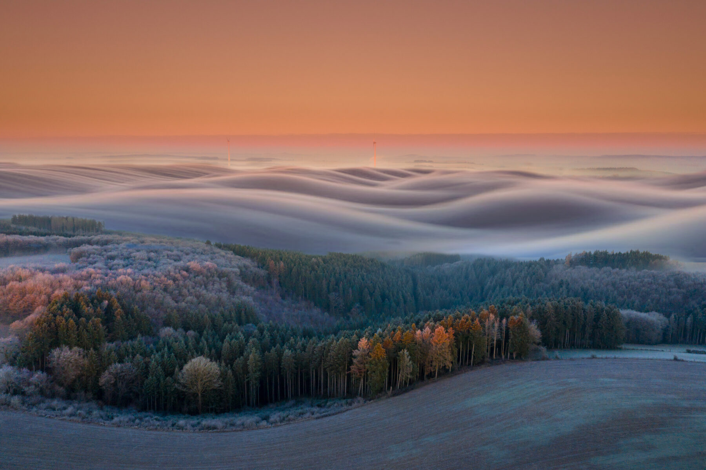
Foto: Anna Molzahn1964Staatsvertrag zur Gründung des Deutsch-Luxemburgischen Naturparks (zwischen Luxemburg und Rheinland-Pfalz)
Erster länderübergreifender Naturpark Westeuropas — bis heute Grundlage der grenzüberschreitenden Zusammenarbeit.
-
Auszeichnung
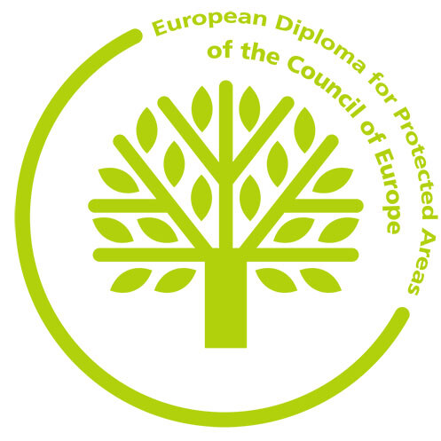
1973Europadiplom für Schutzgebiete des Europarats für den Deutsch-Luxemburgischen Naturpark
Erste internationale Anerkennung der Region; die Auszeichnung wird bis heute (2025) jährlich verteidigt.
-
Organisation
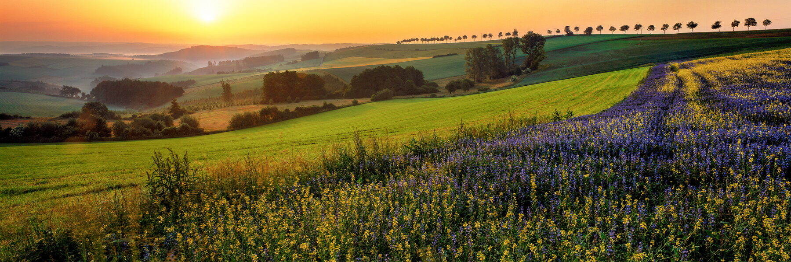
Foto: Raymond ClementAug. 1992Gründung des SIVOUR (Syndicat Intercommunal de la Vallée de l'Our) durch 5 Gemeinden, auf Anregung der Vereinigung "D'Frënn vam Ourdall"
Vorläuferorganisation, aus der 13 Jahre später der Naturpark Our hervorging. Wuchs bis 1998 auf 13 Gemeinden (327 km², ~14.000 Einwohner) an, bevor der Naturpark 2005 gegründet wurde.
-
Organisation
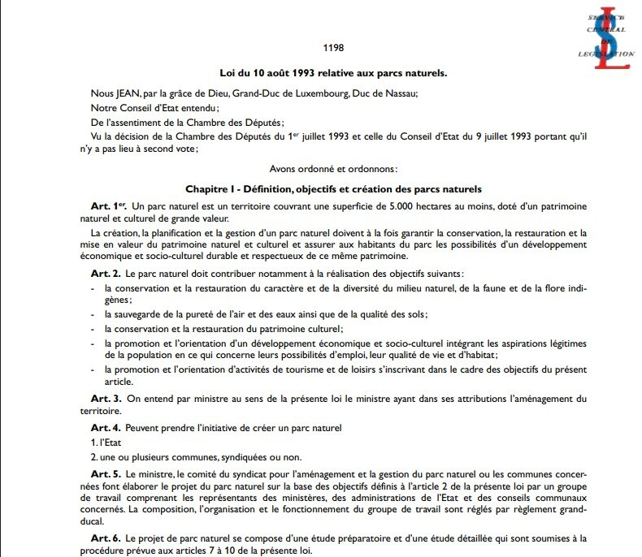
Aug. 1993Luxemburgisches Naturparkgesetz erlassen
Rechtliche Grundlage für die Gründung aller luxemburgischen Naturparke, einschließlich des Naturpark Our.
-
Kultur & Besuche
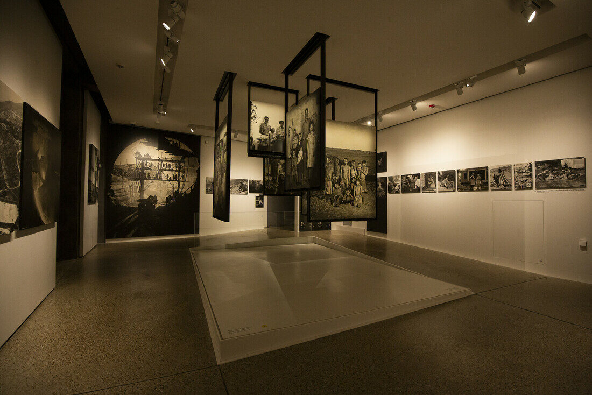
Foto: Liz Hackenseit 1994The Family of Man (Schloss Clervaux)
Die legendäre Fotoausstellung von Edward Steichen (503 Bilder von 273 Fotografen) ist seit 1994 dauerhaft auf Schloss Clervaux zu sehen; 2003 wurde sie ins UNESCO-Weltdokumentenerbe aufgenommen, 2013 nach Renovierung neu eröffnet.
-
1994
Von der Bürgerinitiative zur Planungsprozedur
Zwischen der ersten Idee und der offiziellen Gründung liegen mehr als zehn Jahre Vorarbeit: Auf Initiative der Vereinigung „D'Frënn vam Ourdall" schließen sich 1992 fünf Gemeinden zum SIVOUR zusammen. 1994 bittet der Verband das Landesplanungsministerium offiziell, die Naturpark-Gründungsprozedur einzuleiten — der Startschuss für über ein Jahrzehnt gemeinsamer Planungsarbeit, Bürgerbeteiligung und Konzeptentwicklung.
-
Naturpark entdecken
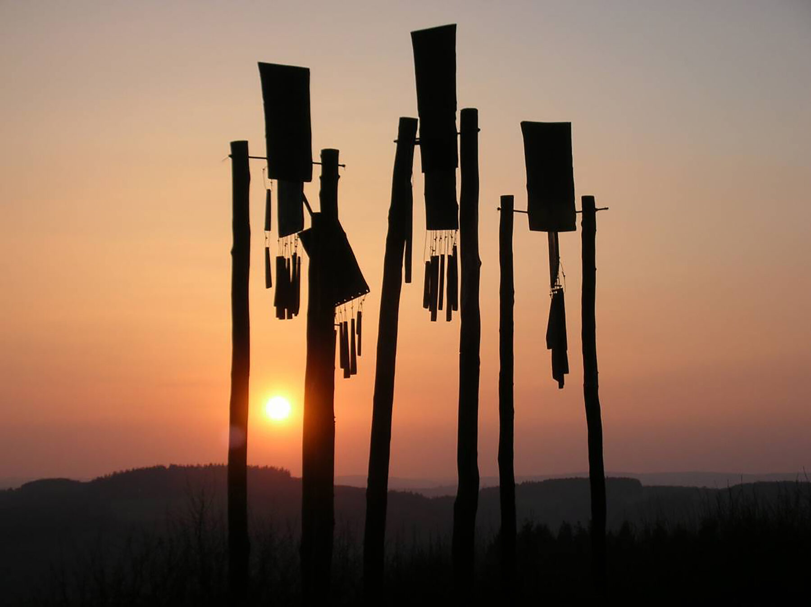
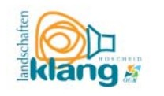
ca. 1998-2000Erste Klanginstallationen am Klangwanderweg ("sentier sonore") Hoscheid, geschaffen vom Klangkünstler Michael Bradke
Eines der ersten und bis heute langlebigsten Erlebniswege-Projekte des Naturparks. Laut dem offiziellen Geschichtsdokument des Naturpark Our gehörte der Klangwanderweg zu den Projekten, die das SIVOUR bereits vor der offiziellen Naturpark-Gründung (seit 1998) in Angriff nahm — 2025 weiterhin aktiv gepflegt und repariert, 2017 mit großem Jubiläumsfest zum 15-jährigen Bestehen gefeiert. Wird zu einem der touristischen Aushängeschilder der Region.
-
Naturpark entdecken
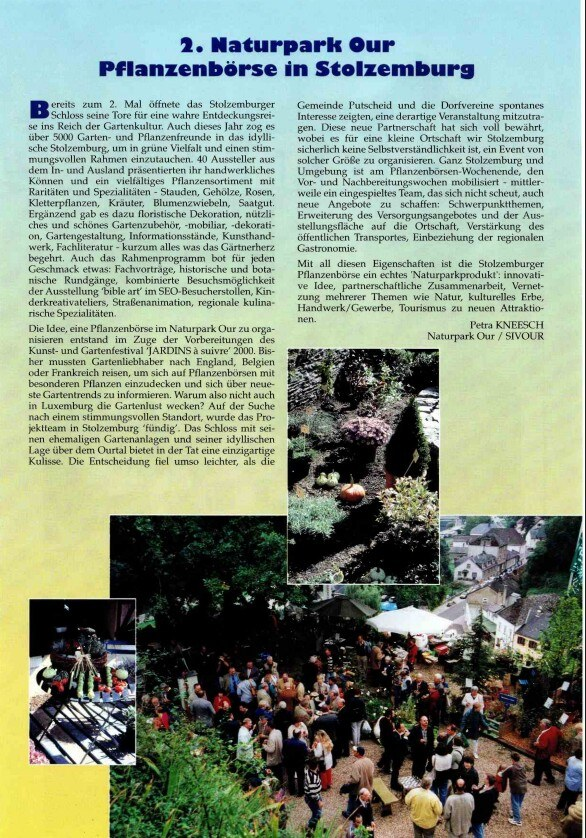
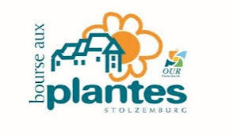
2000Einführung der Pflanzenbörse Stolzemburg (im Rahmen des Künstlergärten-Festivals "JARDINS…à suivre")
Wird zur am längsten laufenden wiederkehrenden Veranstaltung des Naturparks (2021: 20-jähriges Jubiläum).
-
Kultur & Besuche
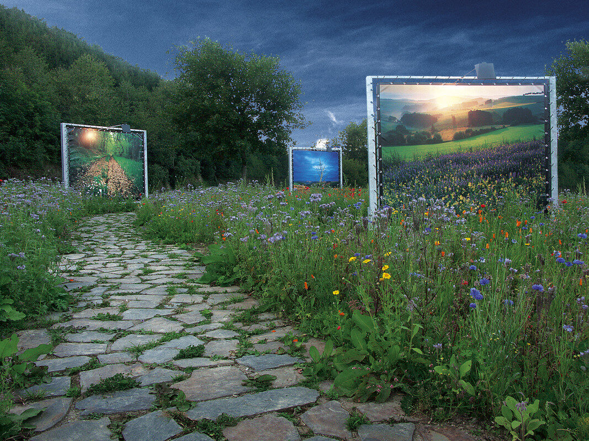
Foto: Raymond Clement2000, 2004 & 2007Jardins à suivre
Grenzüberschreitendes Künstlergärten-Festival: Ab 2000 entstanden u. a. in Troisvierges Künstlergärten; ein 30 km langer Radweg verbindet heute die Gärten von Troisvierges über Heinerscheid und Munshausen nach Clervaux.
-
Langzeitprojekt
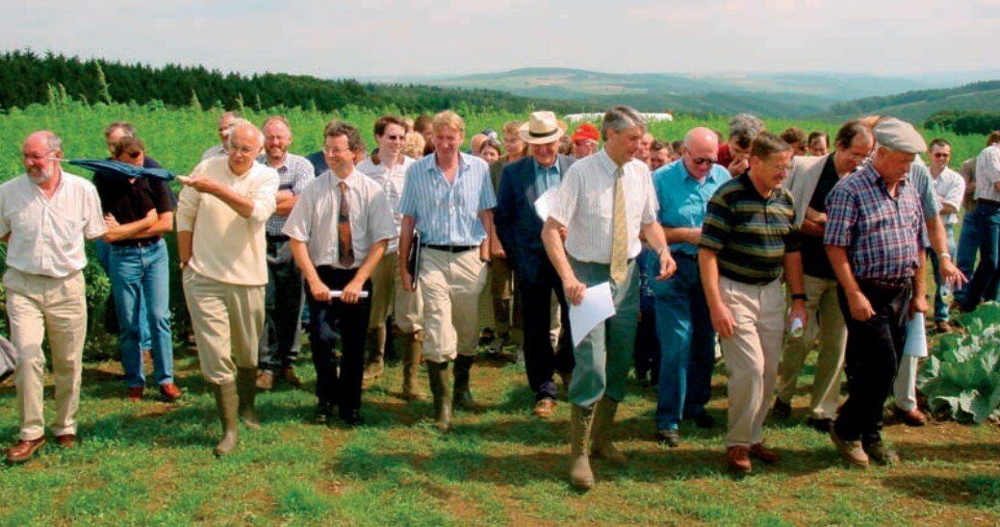
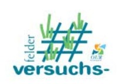
2001Versuchsfelder
Landwirtschaftliches Versuchsfeld-Projekt des Naturpark Our zur Erprobung neuer Anbaumethoden und Kulturpflanzen in der Region.
-
Kultur
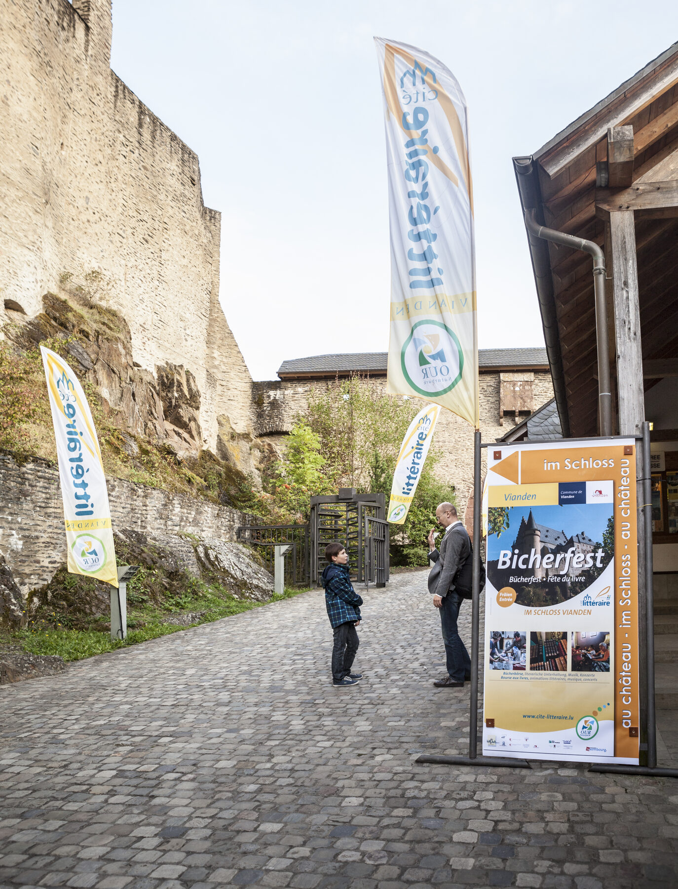
Foto: Vincenzo Cardile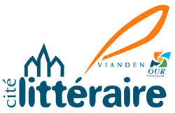
2002Erstes Bücherfest in Vianden
Startpunkt der bis heute laufenden "Cité littéraire"-Kulturschiene in Vianden (später "Veiner Pabeier- a Béicherdeeg").
-
Langzeitprojekt
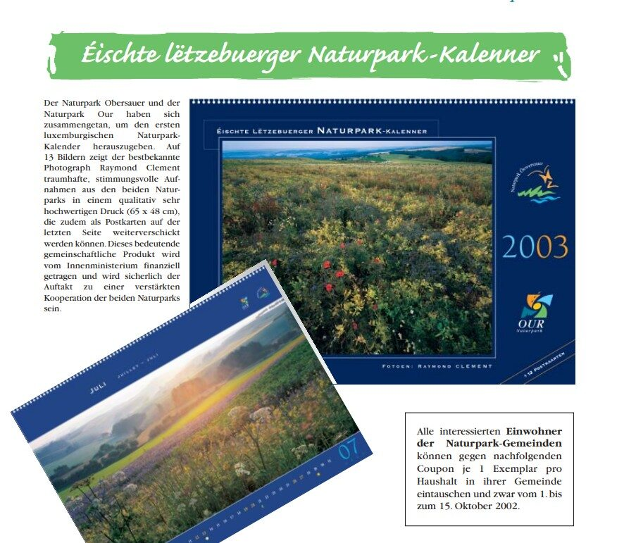
seit 2002Erster „Lëtzebuerger Naturpark-Kalenner"
Gemeinsamer Fotokalender der Naturparke Our und Obersauer mit Aufnahmen von Raymond Clement — gratis für alle Haushalte der Naturpark-Gemeinden und seither regelmäßig neu aufgelegt.
-
Kultur & Besuche
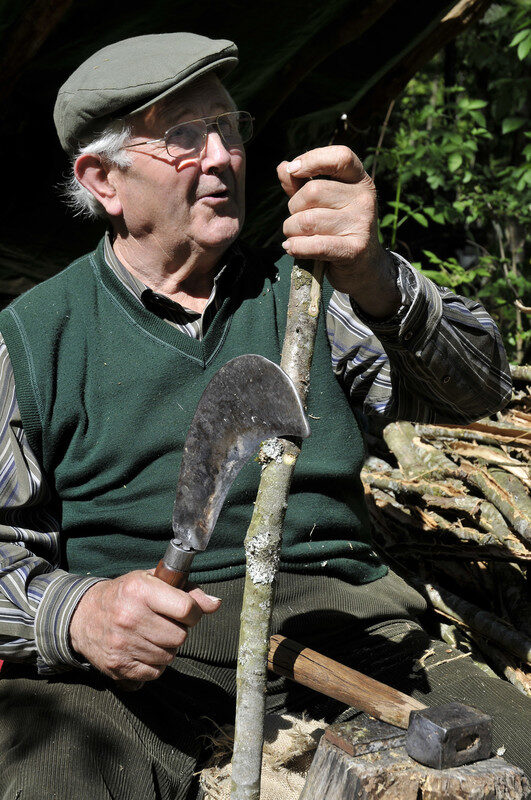
Foto: Joelle Mathias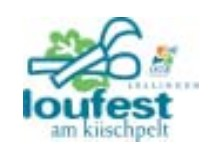
2002Loufest
Fest rund um die traditionelle Lohgewinnung („Lou"): Die Rinde der Eichenniederwälder des Öslings wurde früher zum Gerben genutzt — das Fest hielt dieses Kulturerbe lebendig.
-
Langzeitprojektseit 2002
Naturpark Our auf der Oeko-Foire
Der Naturpark präsentierte sich ab 2002 regelmäßig auf der Oeko-Foire in Luxemburg-Kirchberg; 2003 wurde dort die neue Marke „Lëtzebuerger Naturpark" erstmals vorgestellt.
-
Organisation
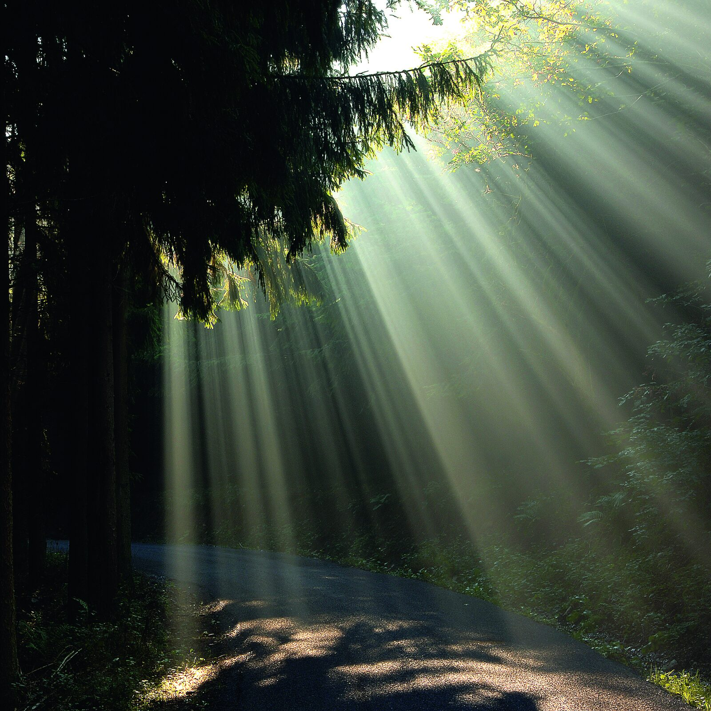
Foto: Raymond ClementDez. 2003Entwicklungskonzept (Etude détaillée) öffentlich vorgestellt
Letzter formaler Planungsschritt vor der offiziellen Gründung des Naturparks.
-
Kultur & Besuche
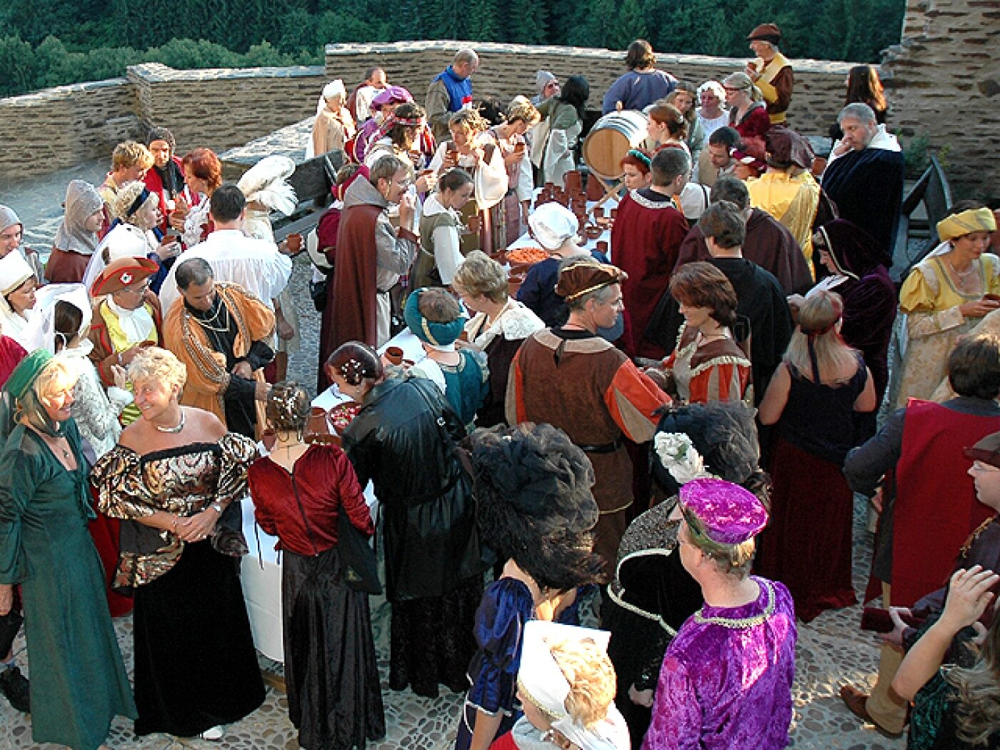
Foto: Visit Eislekseit 2003Mittelalterfest auf Schloss Vianden
Das größte Mittelalterspektakel Luxemburgs und der Großregion: Ritterlager, Gaukler und Markttreiben vor der Kulisse der Burg Vianden — jährlich Ende Juli/Anfang August (2026: 24. Ausgabe).
-
Natur & Umwelt
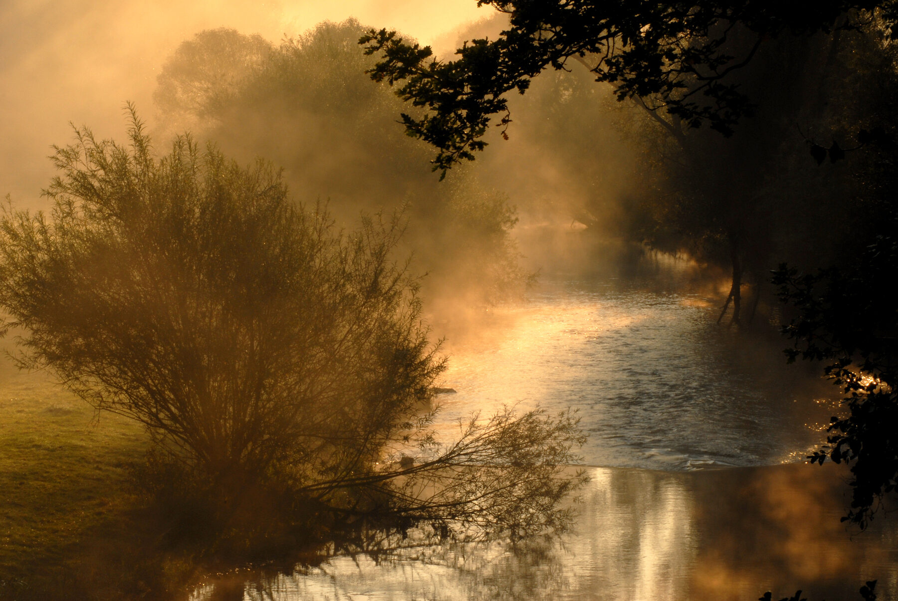
Foto: Pierre HaasMärz 2005Fließgewässerpartnerschaft Naturpark Our gegründet
Wird zum langjährigen Kernprogramm für Gewässerschutz — bis heute aktiv (2025: Abschluss der Renaturierung der Tandelerbaach).
-
Organisation
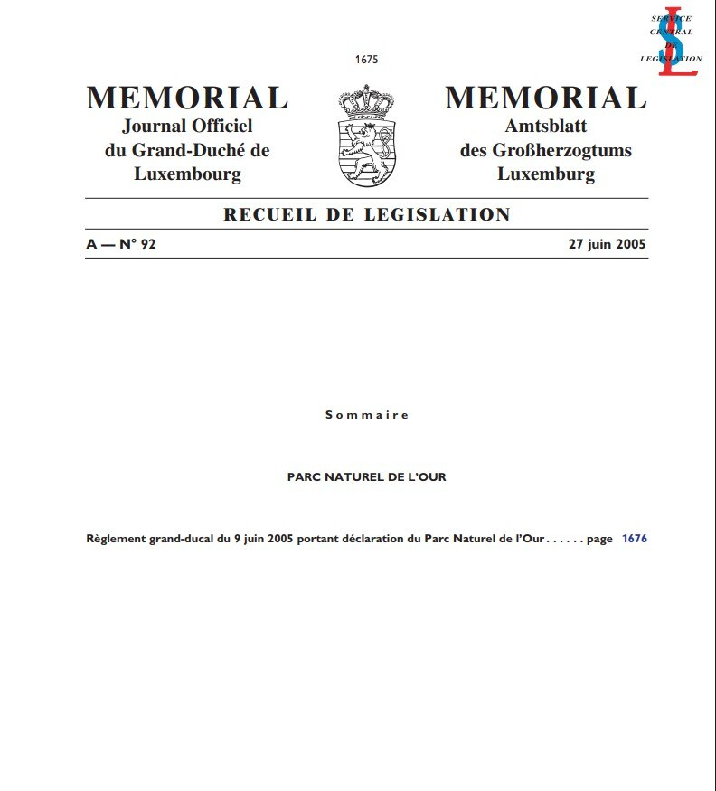
Juni 2005Offizielle Gründung des Naturpark Our (großherzogliche Verordnung, Mémorial A-92)
Das eigentliche Gründungsdatum des Naturparks.
-
Langzeitprojekt
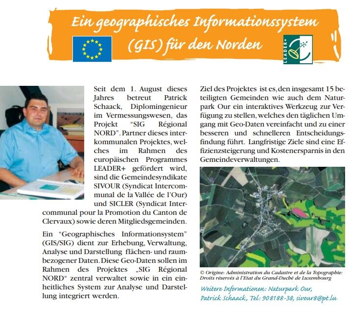
Aug. 2005Start des regionalen geographischen Informationssystems „SIG Régional NORD" (GIS)
Gemeinsames LEADER+-Projekt von SIVOUR und SICLER für 15 Gemeinden: zentrale Verwaltung von Geodaten als Planungswerkzeug — Grundlage des späteren WebGIS des Naturparks.
-
Langzeitprojekt
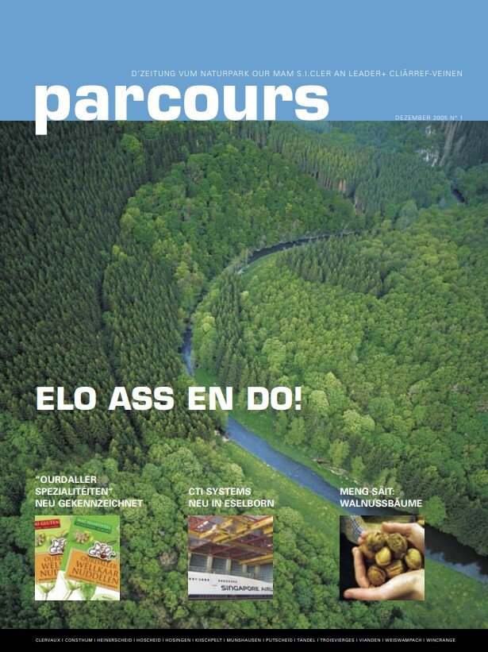
Dez. 2005Erste Ausgabe des Regionalmagazins „parcours"
Gemeinsame Zeitung von Naturpark Our, SICLER und LEADER Clervaux-Vianden; bis Dezember 2015 erschienen 33 Ausgaben, danach abgelöst durch „Naturpark³" bzw. „naturpark.lu".
-
Langzeitprojekt
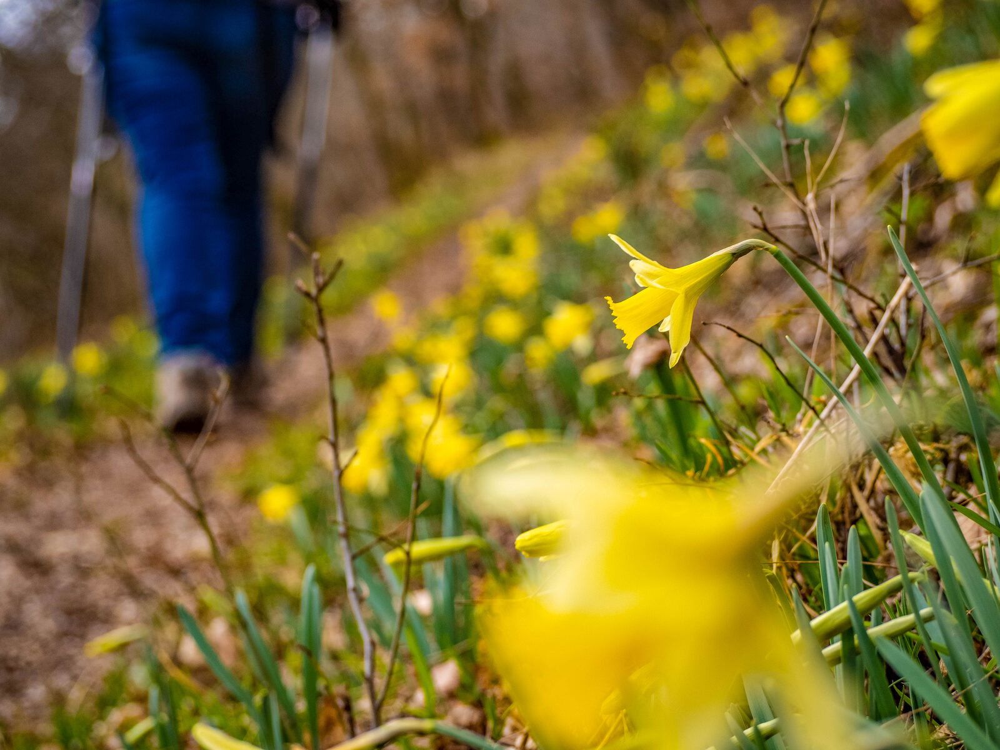
Foto: Visit Eislekseit den 2000er-JahrenVia Botanica (Lellingen/Kiischpelt)
Botanischer Themenwanderweg durch eine der artenreichsten Landschaften Luxemburgs — Ginsterheiden, Eichenwälder und Magerwiesen; berühmt für die Wildnarzissenblüte im April.
-
Kultur & Besuche
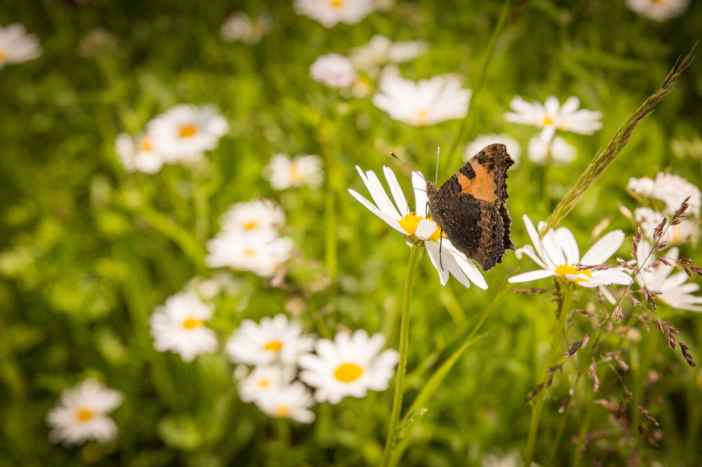
Foto: Liz Hacken2008Biodiversitätstag
Grenzüberschreitender Aktionstag zur Artenvielfalt im Ourtal: Wissenschaftler und Naturkundler aus Luxemburg und Rheinland-Pfalz erfassten gemeinsam Tier- und Pflanzenarten beiderseits der Our (nach dem Vorbild des GEO-Tags der Artenvielfalt).
-
Inauguration
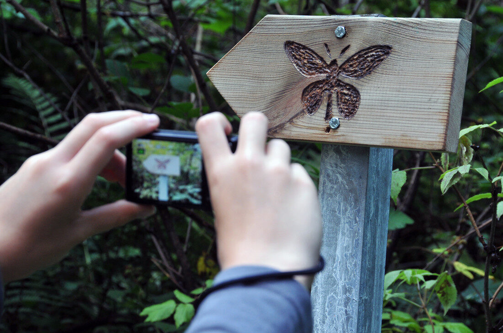
Foto: Joelle Mathias2008Déierepad Kautenbach
Eröffnung des rund 4 km langen Tier-Erlebnispfads ab dem Dorfzentrum Kautenbach, der Familien die heimische Tierwelt und ihre Lebensräume näherbringt.
-
Kultur & Besuche
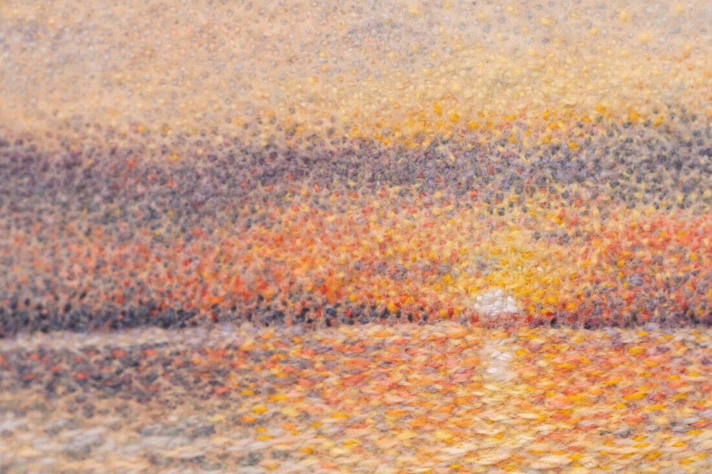
Foto: Laura Londonoseit 2008Quiltfestival
Internationales Quiltfestival Luxembourg: Patchwork- und Textilkunstfestival, das sich im Kiischpelt (Lellingen/Wilwerwiltz) als wiederkehrende Veranstaltung mit internationaler Ausstrahlung etablierte.
-
Inauguration
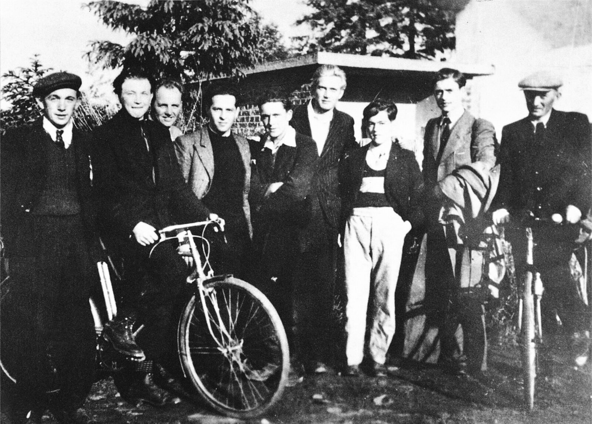
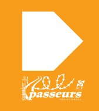
2008Sentier des Passeurs (Fluchthelferweg), Troisvierges
Thematischer Rundwanderweg (Nord 12 km / Süd 9 km) auf den Originalrouten der Fluchthelfer 1942–45, die Resistenzler und Zwangsrekrutierte über die belgische Grenze brachten; seit 2021 mit interaktiver Éislek-App.
-
Organisation
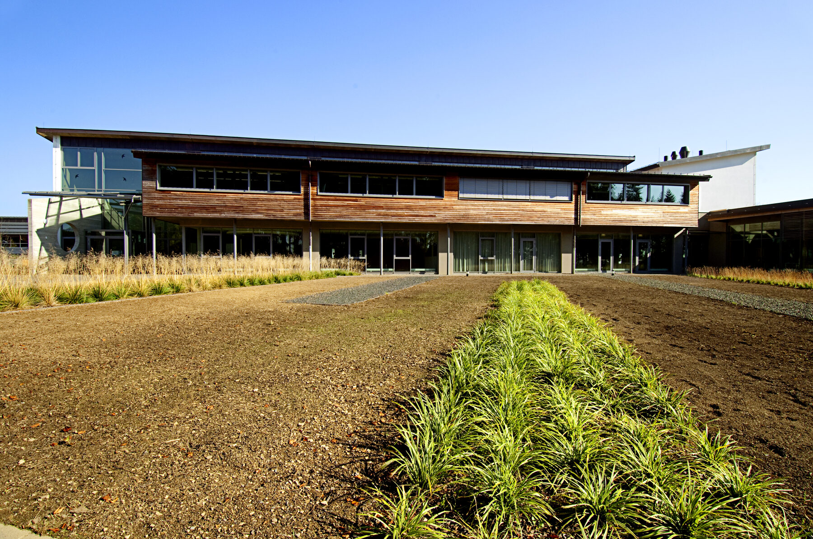
Foto: Raymond ClementMitte 2009Naturpark bezieht Sitz im Naturparkhaus (Centre écologique), Park Hosingen
Bis heute Hauptsitz und zentrale Anlaufstelle des Naturparks.
-
Langzeitprojekt
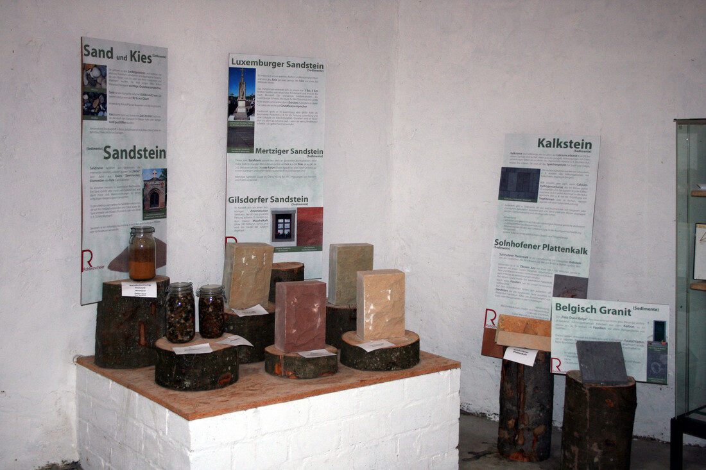
2009GeoBox
Pädagogisches Materialangebot („GeoBox") für Schulen zur Geographie, Natur und Landschaft der Naturparkregion.
-
Exkursion
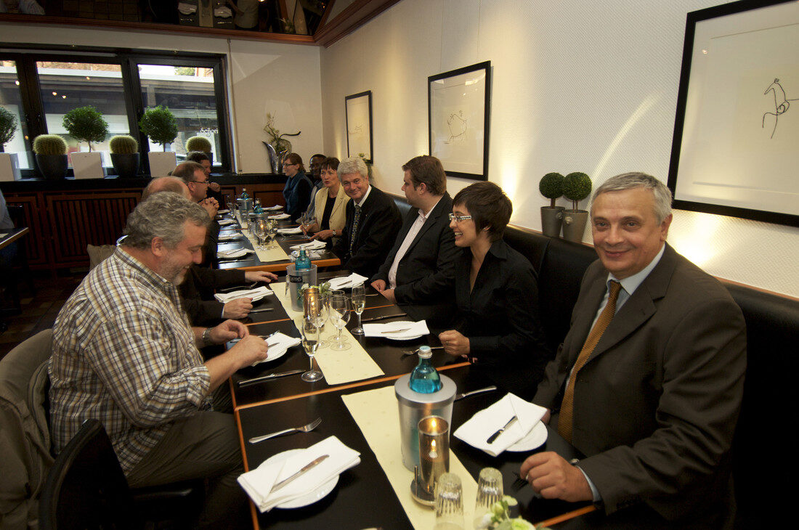
Foto: Raymond Clement2009Exkursion an die Emscher (Emscherreise)
Studienreise an die Emscher (Ruhrgebiet) zum Erfahrungsaustausch über Fluss-Renaturierung und Regionalentwicklung.
-
Langzeitprojekt
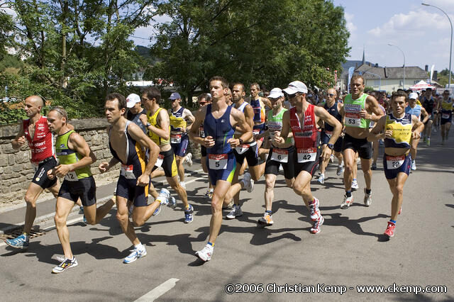
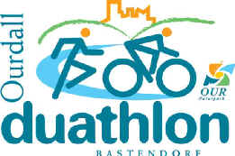
seit den 2010er-JahrenOurdall-Duathlon
Sportveranstaltung im Ourtal, die Laufen und Radfahren entlang der Our kombinierte.
-
Naturpark entdecken
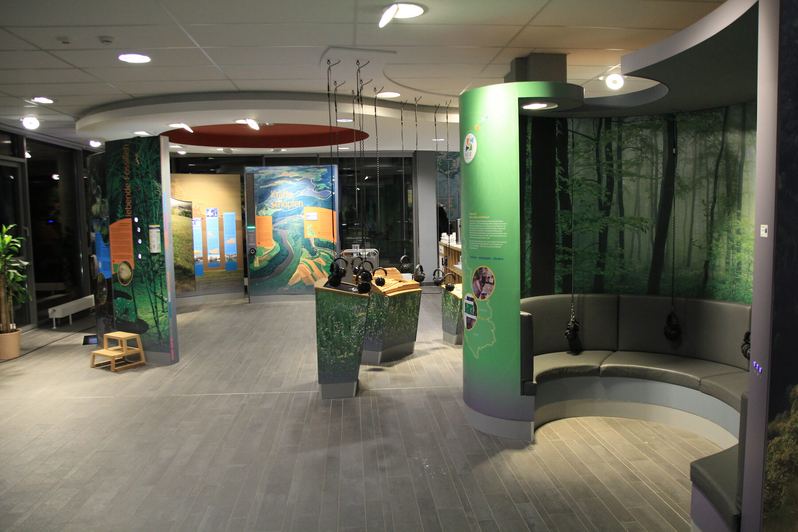
Foto: Michel MeyersOkt. 2011Eröffnung der permanenten EXPO-Ausstellung Naturpark Our
Zentrale Dauerausstellung des Naturparks, seither mehrfach modernisiert und bis heute in Betrieb.
-
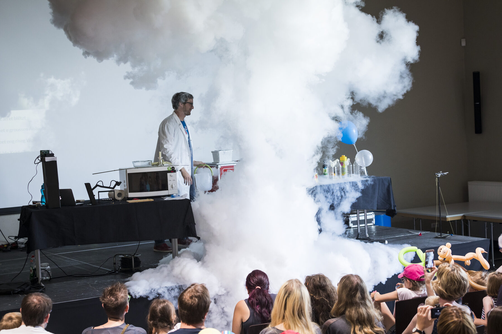
Foto: Caroline Martin2012Das Naturparkfest wird zur festen jährlichen Tradition
Seit 2012 gilt das Naturparkfest „Fuersch duer um Naturparkfest!" als jährlicher Höhepunkt des Erlebnisprogramms — mit Workshops, Kinderaktivitäten und regionalen Produkten. 2024 zählt bereits die 10. Ausgabe, mit über 1.250 Besuchern.
-
Landwirtschaft
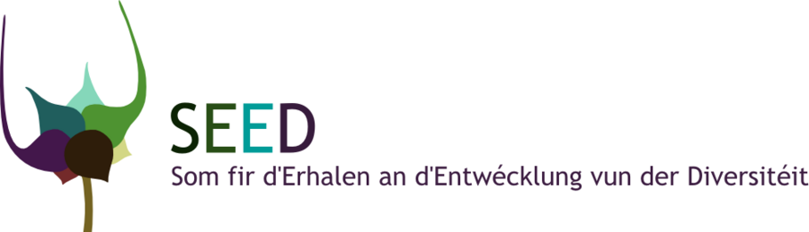
Apr. 2013SEED als a.s.b.l. gegründet
Wichtiges Netzwerk zum Erhalt alter Nutzpflanzensorten, vom Naturpark seit 2008 begleitet.
-
Langzeitprojekt
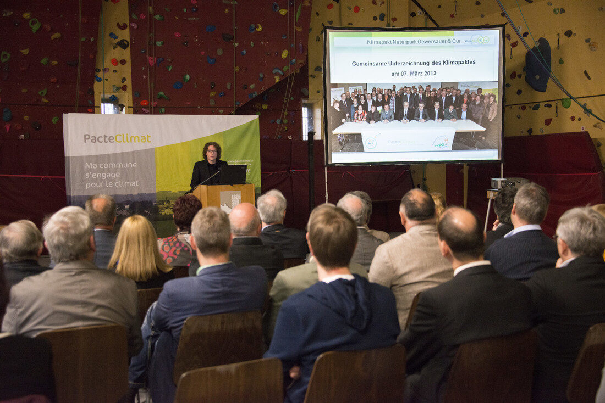
Foto: Raymond Clement2013Beitritt zum nationalen Klimapakt (Pacte Climat)
Die Naturpark-Gemeinden traten dem 2013 gestarteten nationalen Klimapakt bei; der Naturpark übernahm die Klimaberatung — Vorläufer des 2021 gestarteten Klimapakt 2.0.
-
Kultur & Besuche
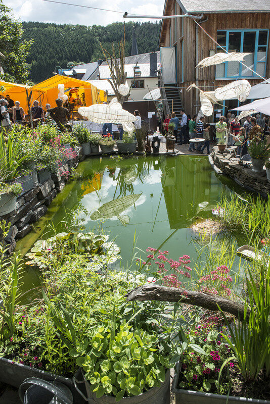
Foto: Raymond ClementJuni 2013Recupart
Erstes „Recup art & Nature art"-Festival im KultOur-Dëppen in Untereisenbach: Upcycling-Kunst und Workshops, unterstützt u. a. von Europe Direct und dem Naturpark Our.
-
Langzeitprojekt
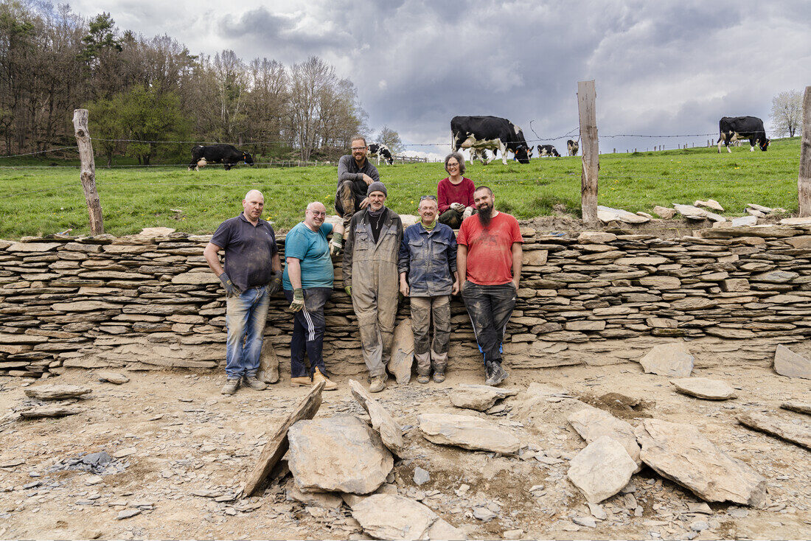
Foto: Caroline Martin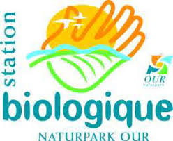
seit 2013Biologische Station Naturpark Our
Per Konvention zwischen Naturpark und Umweltministerium eingerichtete Fachstelle, die staatliche und kommunale Projekte im Natur- und Landschaftsschutz umsetzt (jährliche Tätigkeitsberichte).
-
Kultur & Besuche
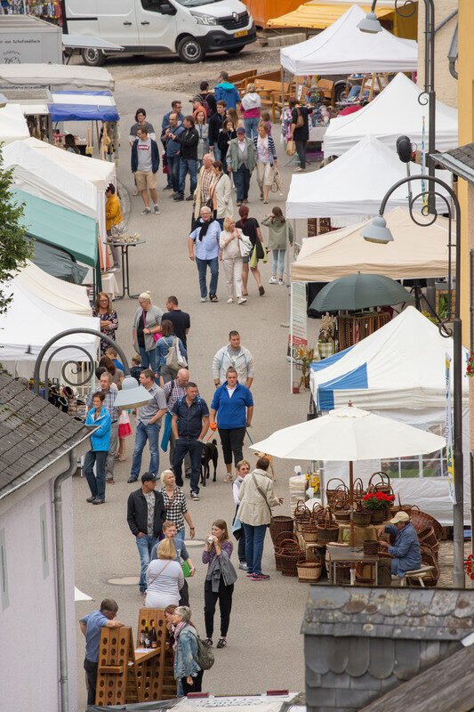
Foto: Liz Hacken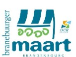
seit 2013Brandenburger Markt
Regionaler Markt in Brandenbourg (Gemeinde Tandel) mit Produkten und Handwerk aus der Region.
-
Kultur & Besuche
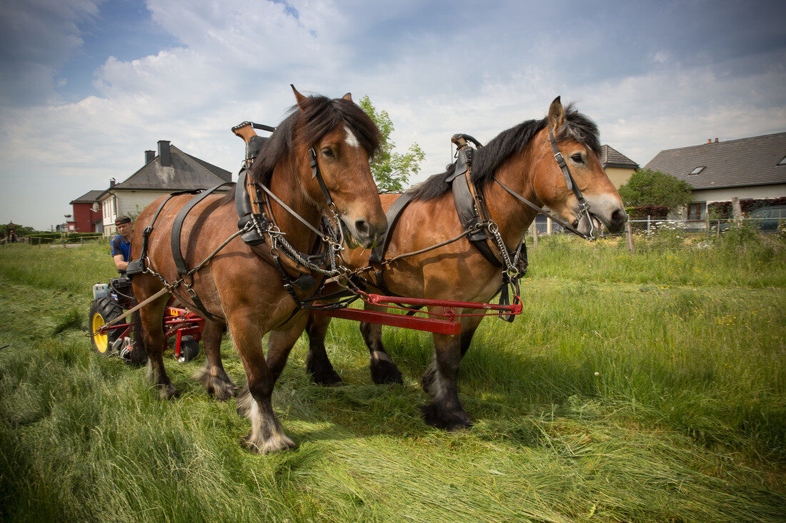
Foto: Liz Hackenseit 2013Daag vam Ardenner Päerd, Munshausen
Jährliches Fest rund um das Ardenner Zugpferd an der Robbesscheier in Munshausen — lebendiges Kulturerbe der Öslinger Landwirtschaft (z. B. Sept. 2013).
-
Kultur & Besuche
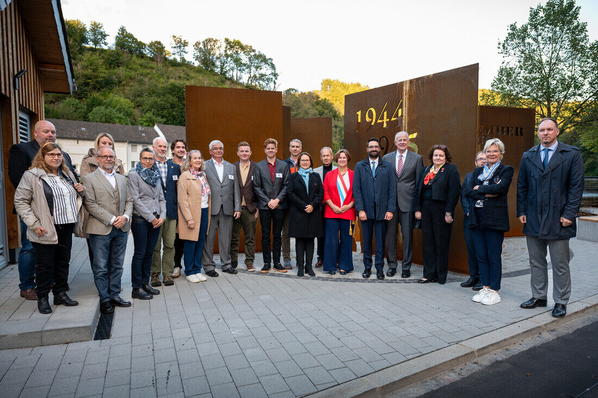
Foto: Patricia Lefèbre2013„Remember us" — Erinnerungsprojekt
Pilotprojekt in der Gemeinde Putscheid (Gralingen, Weiler): dreisprachige Tafeln mit QR-Codes erzählen Geschichten der Ardennenoffensive 1944/45 — Erinnerung an Opfer und mutige Einsätze.
-
Langzeitprojekt
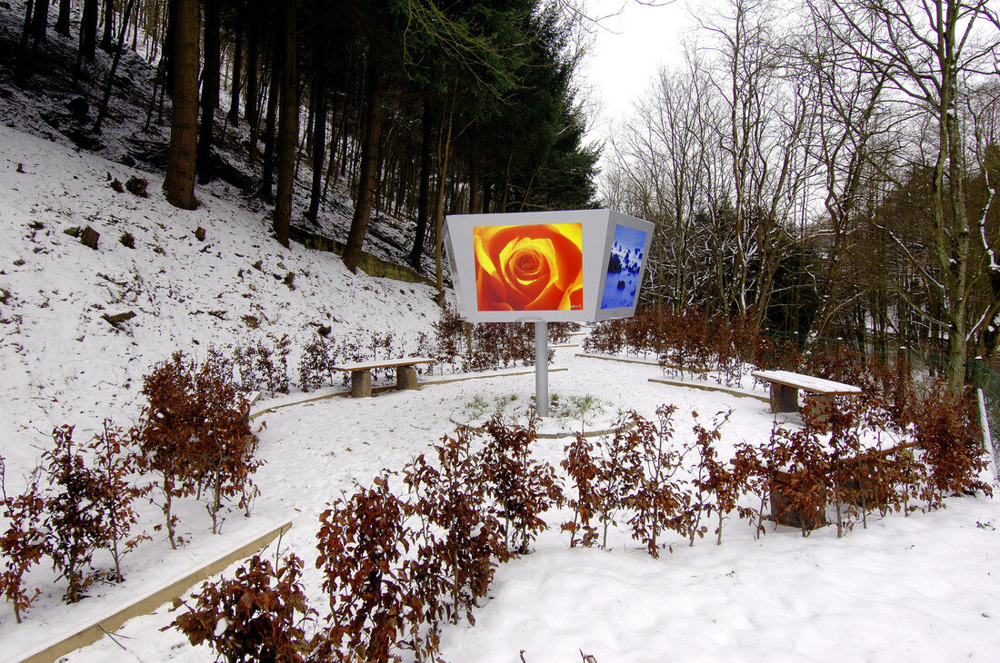
Foto: Raymond Clement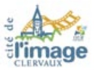
seit den 2010er-JahrenCité de l´image
Kulturelle Einrichtung mit Bezug zur Bild- und Fotokultur im Naturpark-Gebiet — Details zu diesem Eintrag werden noch ergänzt.
-
Exkursion
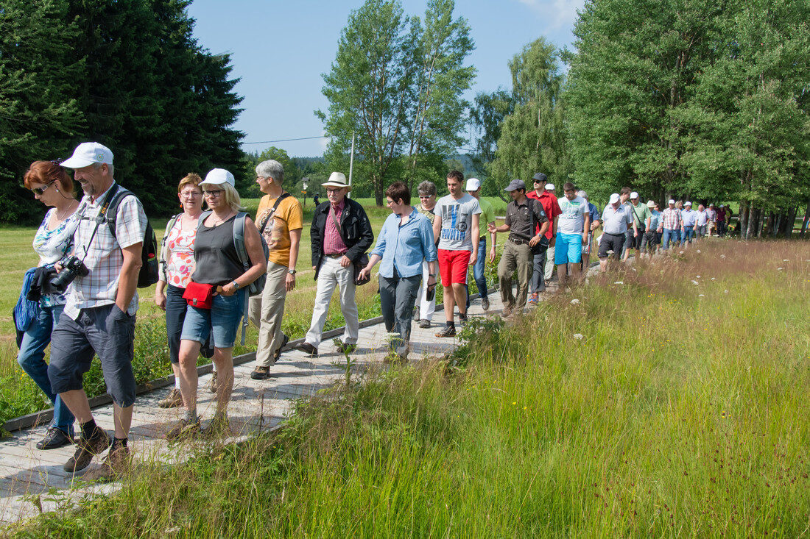
Foto: Luc Jacobs2014Naturpark-Exkursion in den Böhmerwald / Šumava
Studienreise von Vertretern der Naturpark-Gemeinden und -Akteure zum Erfahrungsaustausch über Regionalentwicklung und Naturschutz.
-
Naturpark entdecken
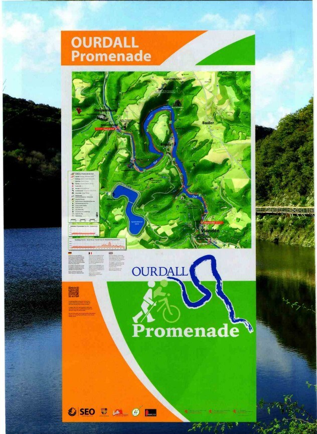
Juni 2015Feierliche Einweihung der Ourdall-Promenade
Wichtiges neues Wanderinfrastruktur-Projekt entlang der Our.
-
Natur & Umwelt
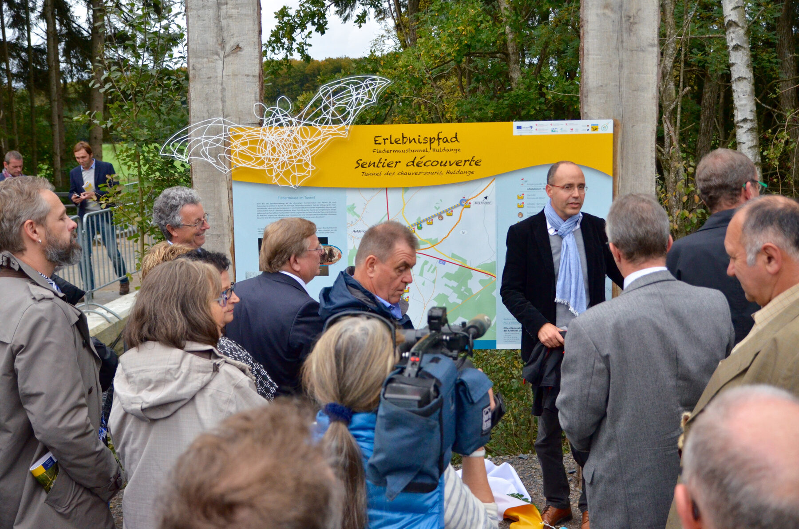
Foto: George KiefferOkt. 2015Eröffnung des Fledermaustunnel-Erlebnispfads, Troisvierges
Wird 2018 EU-Natura-2000-Award-Finalist — eines der bekanntesten Naturschutzprojekte des Naturparks.
-
Foto: Caroline MartinInaugurationJuni 2015
Ourdall Promenade
8,5 km langer Fuß- und Radweg zwischen Vianden und Stolzembourg, teils auf Holzstegen direkt an den Felskanten der Our — feierlich eingeweiht im Juni 2015 (siehe Haupteintrag).
-
Foto: Caroline MartinExkursion2015
Naturpark-Exkursion ins Morvan
Studienreise von Vertretern der Naturpark-Gemeinden und -Akteure zum Erfahrungsaustausch über Regionalentwicklung und Naturschutz.
-
Foto: Raymond ClementOrganisationMärz 2016
Großherzogliche Verordnung: Verlängerung des Naturparkstatus 2015–2025 & offizieller Beitritt der Gemeinde Wincrange
Erste Statutsverlängerung des Naturparks; Erweiterung von 7 auf 8 Mitgliedsgemeinden.
-
Foto: Franz KaracsonAuszeichnungSept. 2016
Naturpark-Gemeinden werden "Vize-Europameister" beim Europäischen Dorferneuerungspreis (Tihany, Ungarn)
Bis dahin höchste erreichte internationale Auszeichnung für die Region.
-
Foto: Caroline MartinKultur2016
Beginn "Historischer Postweg" / "Geschichte zum Anfassen" (Jubiläumsjahr: 500 Jahre Postvertrag)
Wird zu einem der zentralen Kulturtourismus-Standbeine des Naturparks (History-T'Ouren, bis heute jährlich).
-
Foto: Liz HackenExkursion2016
Naturpark-Exkursion ins Vexin
Studienreise von Vertretern der Naturpark-Gemeinden und -Akteure zum Erfahrungsaustausch über Regionalentwicklung und Naturschutz.
-
Foto: Caroline MartinExkursion2016
Exkursion entlang der Vennbahn
Studienreise von Vertretern der Naturpark-Gemeinden und -Akteure zum Erfahrungsaustausch über Regionalentwicklung und Naturschutz.
-
Foto: Liz HackenNatur & UmweltMärz 2017
Offizieller Startschuss für INTERREG Europe NIGHT LIGHT, Clervaux
Grundstein für die spätere landesweite Vorreiterrolle des Naturparks beim Thema Lichtverschmutzung.
-
Foto: Aloyse LienersExkursion2017
Naturpark-Exkursion in den Frankenwald
Studienreise von Vertretern der Naturpark-Gemeinden und -Akteure zum Erfahrungsaustausch über Regionalentwicklung und Naturschutz.
-
OrganisationJuli 2018
Luxemburgisches Naturschutzgesetz erlassen (Art. 36: Gründung von COPILs)
Schafft die rechtliche Basis für die spätere Gründung von COPIL Éislek.
-
Foto: Caroline MartinOrganisationOkt. 2018
Offizielle Verabschiedung der Charta des COPIL Éislek
Start der regionalen Natura-2000-Steuerungsgruppe, Kernstück der heutigen Naturschutzarbeit im Éislek.
-
Foto: European UnionAuszeichnung2018
Naturpark Our Finalist beim Natura 2000-Award der EU-Kommission (Projekt Fledermaustunnel Huldange)
Erste EU-weite Anerkennung eines Naturpark-Our-Projekts.
-
Foto: Liz HackenInauguration2018
Einweihung Infopoint Troisvierges
Neuer touristischer Infopoint („Vennbahn") in Troisvierges als Anlaufstelle für Besucher des nördlichen Naturparks.
-
Foto: Caroline MartinExkursion2018
Exkursion Natura 2000
Studienreise von Vertretern der Naturpark-Gemeinden und -Akteure zum Erfahrungsaustausch über Regionalentwicklung und Naturschutz.
-
Foto: Pol BourkelKlimaschutzOkt. 2019
Naturpark richtet eigenen Lichtberater ein (Pilotprojekt)
Wird bis 2025 zum nationalen Kompetenzzentrum für verantwortungsvolle Außenbeleuchtung ausgebaut.
-
Foto: Liz HackenExkursion2019
Naturpark-Exkursion nach Schiermonnikoog
Studienreise von Vertretern der Naturpark-Gemeinden und -Akteure zum Erfahrungsaustausch über Regionalentwicklung und Naturschutz.
-
Foto: Liz HackenNatur & Umwelt2020
Start des 5-Jahres-Projekts "D'Naturparken zu Lëtzebuerg – (een) Insekteräich"
Bis heute (2025) laufendes Leuchtturmprojekt zum Insektenschutz, gemeinsam mit den Naturparken Öewersauer und Mëllerdall.
-
Foto: Caroline MartinKlimaschutzSept. 2021
Gründung der internen Abteilung ECO (Energy – Climate – Our)
Bündelt seither die gesamte Klimaschutz- und Energiearbeit des Naturparks.
-
Foto: Caroline MartinKlimaschutzNov. 2021
Offizieller Start von "Klimapakt 2.0"
Neue Generation des kommunalen Klimaschutzprogramms für die Naturpark-Gemeinden.
-
Foto: Caroline MartinLangzeitprojekt2021
Insektenaustellung - Superhelden in Gefahr
Interaktive Wanderausstellung der drei Naturparke mit dem Naturmusée im Rahmen des Projekts „Insekteräich": Spiel- und Lernstationen, 3D-Modelle und echte Präparate — v. a. für Schulen der Naturparkregionen.
-
Landwirtschaft
 Foto: Patricia Lefèbre
2022
Foto: Patricia Lefèbre
2022Start des Agroforst-Pilotprojekts der COPIL Éislek (Laufzeit 2022–2027)
Wächst bis 2025 auf 35 ha bei sechs Landwirten — eines der am schnellsten wachsenden Projekte der letzten Jahre.
-
Natur & Umwelt2022
Aufbau des Naturpakt-Programms in den Naturpark Our-Gemeinden
Neues gemeindebasiertes Biodiversitätsprogramm, bis 2025 auf alle 10 (teils zukünftigen) Mitgliedsgemeinden ausgeweitet.
-
Foto: Caroline MartinKultur & BesucheSept.–Okt. 2022
„Au Goût du Terroir" (Esch2022)
Gemeinsamer Markt der drei luxemburgischen Naturparke im Rahmen des Kulturhauptstadtjahres Esch2022 in Käerjeng: regionale Produkte, Workshops und Nachhaltigkeitsthemen.
-
Foto: Caroline MartinInauguration2022
Einweihung Staatssteinbruch
Abschluss des Projekts zur Aufwertung des ehemaligen Staatssteinbruchs Merkholtz (2020–2022) unter Schirmherrschaft des Naturparks: Infostandort am Radweg PC 20 und Website machen Industriegeschichte und Natura-2000-Naturraum erlebbar.
-
Foto: Caroline MartinLangzeitprojekt2022
Roadbook „Go Electric“ für E-Mobilität im Naturpark Our
Praxisorientiertes Roadbook für elektromobile Entdeckungstouren im Naturpark Our — Teil der Initiative „Go Electric“.
-
Foto: Liz HackenExkursion2022
Naturpark-Exkursion an die Côte d'Opale (Caps et Marais d'Opale)
Studienreise von Vertretern der Naturpark-Gemeinden und -Akteure zum Erfahrungsaustausch über Regionalentwicklung und Naturschutz.
-
Foto: Caroline MartinNaturpark entdeckenMai 2023
Große Eröffnung des Ecole du Goût-Standorts in Brandenburg (Gebäude "Al Millen" & "Al Molkerei")
Neues eigenes Kompetenzzentrum für Ernährungs- und Verbraucherbildung, gemeinsam mit den Naturparken Öewersauer und Mëllerdall.
-
Foto: Caroline MartinNaturpark entdeckenMai 2023
"Woch vum Goût" – Eröffnungswoche mit Verkostungen zur Einweihung der Ecole du Goût
Einwöchiges Aktivitätsprogramm direkt im Anschluss an die Eröffnung — Verkostungen, Workshops und Führungen als Auftakt für das neue Kompetenzzentrum.
-
Foto: Laurent BlumKultur & Besuche2023
Loss d’Kierch am Duerf
Initiative zur Erhaltung und neuen Nutzung der Dorfkirchen der Region als Orte für Kultur und Begegnung.
-
Foto: Caroline MartinInauguration2023
Einweihung Rundweg “Ehemaliger Tiergarten”
Einweihung des Rundwanderwegs durch den ehemaligen „Tiergarten", das historische Wildgehege der Grafen von Vianden.
-
2013–2025
Von der Idee zur Ecole du Goût
Was 2013 als kleines pädagogisches Programm zur Geschmacksbildung begann („Education au Goût des Jeunes"), wächst über ein Jahrzehnt zu einem gemeinsamen Projekt der drei Naturparke Our, Öewersauer und Mëllerdall heran: mit einer eigenen Vollzeitstelle (2018), einem eigenen Standort in Brandenburg — den Gebäuden „Al Millen" und „Al Molkerei" — (2023), und 2025 dem EU-Projekt FLAVOR mit elf Partnern aus zehn Ländern.
-
Naturpark entdeckenJuni 2024
Offizielle Einweihung der ersten Natura 2000-Lauschtour "Éislek Pad"
Neues digitales Vermittlungsformat für Natura-2000-Gebiete im Éislek.
-
Foto: Pol BourkelOrganisationJuni 2024
Öffentliche Vorstellung der Etude préparatoire — Beginn der Verlängerung/Erweiterung 2025–2035
Startschuss des laufenden Verfahrens zur zweiten Statutsverlängerung und möglichen Erweiterung des Naturparks.
-
Foto: Patricia LefèbreKultur & BesucheNov. 2024
Agroforst Kolloquium
Kolloquium „Agroforst — Chance für eine zukunftsfähige Landwirtschaft in Zeiten des Klimawandels" in Hosingen; mit über 140 Teilnehmern ausverkauft, 2025 folgte eine zweite Auflage.
-
Organisation2025
20-jähriges Bestehen des Naturpark Our
Jubiläumsjahr — Anlass für Rückblick (10-Jahres-/20-Jahres-Bilanzen) und Ausblick im Rahmen der laufenden Verlängerung.
-
Foto: Raymond ClementOrganisationJuli 2025
Detailstudie (Etude détaillée) für Verlängerung/Erweiterung des Naturparks vorgestellt, Bourscheid
Zentraler gesetzlich vorgeschriebener Meilenstein im laufenden Verlängerungsprozess; Abschluss der Prozedur im 1. Halbjahr 2026 erwartet.
-
LandwirtschaftMai 2025
Start des Interreg-Projekts FLAVOR (Ecole du Goût, 11 Partner aus 10 Ländern, bis 2029)
Erstes großes eigenständiges EU-Projekt mit der Ecole du Goût als Naturpark-Our-geführtem Vorhaben.
-
Foto: Anna MolzahnAuszeichnung2025
Gemeinde Putscheid wird erste "International Dark Sky Community" Luxemburgs (DarkSky International)
Krönung der jahrelangen Lichtberatungsarbeit des Naturparks; erste Auszeichnung dieser Art landesweit.
-
2025
Seit 20 Jahren steht der Naturpark Our für den respektvollen Umgang mit Natur und Landschaft sowie für eine nachhaltige Entwicklung der Region. Dieses Jubiläum ist ein schöner Anlass, um zurückzublicken auf das Erreichte — und zugleich nach vorne zu schauen. Emile Eicher, Präsident des Naturpark Our — Geschäftsbericht 2025
Die Geschichte geht weiter
2025 ist ein Jubiläumsjahr: 20 Jahre nach der offiziellen Gründung befindet sich der Naturpark Our mitten in der Prozedur zur Verlängerung und möglichen Erweiterung seines Status für 2025–2035 — mit den Gemeinden Bourscheid und Weiswampach als neuen Kandidaten. Der Abschluss des Verfahrens wird für das erste Halbjahr 2026 erwartet.
Mehr auf naturpark-our.luQuellen
- Naturpark Our — Geschäftsberichte 2013–2025 (naturpark-our.lu/publication)
- Naturpark Our — Geschichte des Naturpark Our (offizielles Geschichtsdokument, naturpark-our.lu/geschichte-und-aufgaben)
- Luxemburgisches Naturparkgesetz vom 10. August 1993 (loi relative aux parcs naturels)
- Mémorial A-92/2005 (Gründungsverordnung), Mémorial A-47/2016 (Verlängerungsverordnung)
- musikaktionen.de — Michael Bradke, Klangwanderweg Hoscheid
Diese Seite ist eine kuratierte Auswahl aus einem umfassenderen, laufend gepflegten Ereignis-Archiv des Naturpark Our.